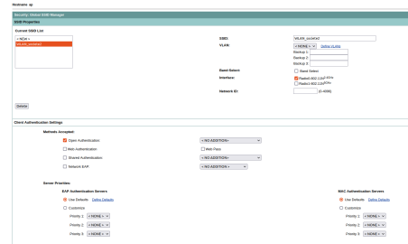

Étudiant en BUT Réseaux & Télécommunications
Parcours Cybersécurité
# À propos de moi
class Etudiant:
def __init__(self):
self.nom = "Roman Negrila"
self.age = 21
self.formation = "BUT R&T"
self.specialite = "Cybersécurité"
self.alternance = "Auchan"
self.permis = True
self.anglais = "B2"
moi = Etudiant()À Propos de Moi
J'ai 21 ans et je suis actuellement en 3ème année de BUT Réseaux & Télécommunications à l'IUT de Béthune, spécialisation Cybersécurité.
Je suis en alternance au sein de l'équipe exploitation réseau d'Auchan à Villeneuve d'Ascq, où je travaille sur la gestion et la supervision de l'infrastructure réseau du magasin.
Ce qui me passionne dans la cybersécurité, c'est la course constante entre les attaquants et les défenseurs. Comprendre comment fonctionnent les vulnérabilités pour mieux sécuriser les systèmes, c'est un domaine qui me stimule au quotidien.
Formation
BUT Réseaux & Télécommunications
Parcours Cybersécurité
IUT de Béthune, Université d'Artois
- Architecture et administration des réseaux
- Sécurité des systèmes et des données
- Cryptographie et protocoles sécurisés
- Analyse de risques et gestion des incidents
Baccalauréat Général
Spécialités : Mathématiques • NSI
Lycée de l'Europe, Béthune
- Classe EURO Anglais
Administrer
Installer, configurer et administrer les systèmes, services et ressources numériques.
AC31.01 Concevoir un projet de réseau informatique d'une entreprise en intégrant les problématiques de haute disponibilité, de QoS, de sécurité et de supervision
Lors du projet Pépinière d'Entreprise (SAE21/SAE24), j'ai conçu une infrastructure réseau complète pour une société de pépinière d'entreprises. Ce projet a nécessité la conception d'un réseau sécurisé avec plusieurs services (administration, production, IT) séparés par des VLANs. J'ai intégré les notions de haute disponibilité avec la redondance des équipements, configuré la QoS pour prioriser le trafic voix sur IP, et mis en place une architecture sécurisée avec pare-feu et filtrage.

Architecture conçue
- VLAN 10 (Administration) :
192.168.10.0/24 - VLAN 20 (Production) :
192.168.20.0/24 - VLAN 30 (IT) :
192.168.30.0/24 - VLAN 40 (Guest) :
192.168.40.0/24
Services déployés
- Windows Server 2019 : AD DS, DNS, DHCP
- Asterisk : Serveur ToIP avec trunk SIP
- Docker : Apache/Nginx, TFTP
- Caméra IP : Vivotek avec analyse vidéo
AC31.02 Réaliser la documentation technique de ce projet
Dans le cadre du Projet Pépinière, j'ai rédigé une documentation technique complète permettant la reproductibilité de l'infrastructure.
Documentation réalisée
- Configuration routeur Cisco (NAT, ACL, DHCP, VLAN, QoS)
- Configuration switch Cisco (trunk, access ports)
- Configuration Windows Server (AD DS, DNS, DHCP)
- Guide de dépannage et maintenance
Exemple de configuration Routeur
! Configuration des VLANs
interface Vlan10
description Administration
ip address 192.168.10.1 255.255.255.0
ip nat inside
!
ip dhcp pool vlan10
network 192.168.10.0 255.255.255.0
default-router 192.168.10.1AC31.03 Réaliser une maquette de démonstration du projet
J'ai réalisé une maquette fonctionnelle complète du projet Pépinière permettant de démontrer la faisabilité technique devant le jury.
Composants de la maquette
- Routeur Cisco C927-4P : NAT, ACL, DHCP, QoS
- Switch Cisco Catalyst 2960 : 8 ports access/trunk
- 4 VMs clients : Windows 10, Ubuntu, Kali Linux
- Serveur Windows Server 2019 : AD DS, DNS, DHCP
- Serveur Asterisk : ToIP avec 2 téléphones IP
AC31.04 Défendre et argumenter un projet
Lors des soutenances de projets (Pépinière, SAE 501, SAE 503), j'ai présenté et défendu mes choix techniques devant un jury d'enseignants et de professionnels.
Projets défendus
- Projet Pépinière : Architecture réseau complète (note: 16/20)
- SAE 501 : Infrastructure conteneurisée Docker (note: 17/20)
- SAE 503 : Services ROM/VoIP (note: 15/20)
AC31.05 Communiquer avec les acteurs du projet
Au cours des projets collectifs, j'ai appris à communiquer efficacement avec les membres de l'équipe et les enseignants.
Communication en équipe
- Répartition des tâches via matrice RACI
- Espaces de travail partagés (Google Drive, GitHub)
- Réunions quotidiennes de synchronisation
- Appel téléphonique en anglais avec "client" simulé
Langues
- Communication en français
- Anglais B2
AC31.06 Gérer le projet et les différentes étapes de sa mise en œuvre en respectant les délais
J'ai géré des projets complets sur plusieurs semaines en respectant les délais. Le projet Pépinière s'est déroulé sur 6 jours intensifs.
Planification
- Création du diagramme de Gantt sur 6 jours
- Identification des tâches critiques
- Gestion des dépendances entre tâches
- Suivi de l'avancement quotidien
Résultats
- Infrastructure complète livrée
- Documentation complète (30 pages)
- Soutenance réussie (note: 16/20)
- Délai respecté
Connecter
Concevoir, installer et administrer une infrastructure réseau sécurisée.
AC32.01 Déployer un système de communication d'entreprise
Traces techniques
- Asterisk 18 : 10 comptes SIP, trunks inter-serveurs
- Vivotek RTSP : Détection QR OpenCV
AC32.02 Déployer un réseau d'accès sans fil sécurisé
J'ai configuré un réseau WiFi sécurisé sur point d'accès Cisco dans le cadre du projet Pépinière.
Configuration borne WiFi Cisco
- Création du SSID "WLAN_Pepiniere"
- Configuration WPA2-Enterprise avec authentification RADIUS
- Sécurisation en 2.4GHz et 5GHz (802.11n/ac)
- Configuration du chiffrement AES-256
- Isolation des clients
Sécurité WiFi
- WPA2 Enterprise avec serveur RADIUS
- Chiffrement AES 256 bits
- Authentification par certificats
AC32.03 Déployer un réseau d'accès fixe et services opérateurs
J'ai déployé une infrastructure réseau complète avec routeur et switch Cisco pour le projet Pépinière.
Équipements configurés
- Routeur Cisco C927-4P : Routage inter-VLAN, NAT, ACL, DHCP
- Switch Cisco Catalyst 2960 : 24 ports en mode access/trunk
Architecture réseau
- 3 VLANs principaux (10, 20, 30)
- Routage inter-VLAN sur le routeur Cisco
- NAT pour accès Internet
- ACL pour filtrage inter-VLAN
Configuration routeur
! Interfaces VLAN
interface Vlan10
description Administration
ip address 192.168.10.1 255.255.255.0
ip nat inside
!
interface Vlan20
description Production
ip address 192.168.20.1 255.255.255.0AC32.04 Connecter de manière sécurisée au système d'information
J'ai sécurisé l'accès au système d'information avec plusieurs couches de protection.
Sécurité réseau
- ACL sur routeur Cisco pour filtrer le trafic
- NAT pour masquage d'adresses
- Séparation des VLANs pour isoler les services
- SSH v2 pour administration distante
- Journalisation des connexions (logging)
Services sécurisés
- Serveur Web avec HTTPS
- Authentification sur Windows Server (AD DS)
- Accès SSH avec clés RSA 4096 bits
- Fail2Ban sur Linux
AC32.05 Collaborer en mode projet (Français/Anglais)
J'ai travaillé en équipe de 5 personnes sur le projet Pépinière, avec une répartition claire des tâches.
Équipe projet
- Mathis Faucher - Responsable configuration Cisco
- Roman Negrila - Responsable services Windows/Linux
- Yohann Piek - Responsable documentation
- Enzo Savary - Responsable IoT/Arduino
- Lucas Verwaerde - Responsable QA/Tests
Communication
- Réunions quotidiennes en français
- Appel téléphonique en anglais avec "client" simulé
- Communication asynchrone via Slack
Programmer
Développer des applications, scripts et automatisations.
AC33.01 Implémenter des algorithmes
Traces techniques
import cv2
from pyzbar.pyzbar import decode
class QRCodeScanner:
def __init__(self, rtsp_url):
self.rtsp_url = rtsp_url
def process_frame(self, frame): gray = cv2.cvtColor(frame, cv2.COLOR_BGR2GRAY)
qrcodes = decode(gray)
for qrcode in qrcodes:
data = qrcode.data.decode('utf-8')
self.save_qrcode(data)
return frameAC33.02 Programmer des applications
J'ai développé des applications web complètes avec Flask et des interfaces de gestion.
Application Flask (SAE 501)
- API REST avec Flask (Python 3.10)
- Interface d'administration Web (Bootstrap 5)
- Gestion des conteneurs Docker via API
- Authentification utilisateur (JWT)
- Base de données MySQL 8.0
Site Web (Projet Pépinière)
- Pages dynamiques en français et anglais
- Base de données produits (SQLite)
- Formulaire de contact avec validation
- Design responsive
AC33.03 Automatiser des tâches
J'ai automatisé plusieurs tâches système avec des scripts.
Automatisations réalisées
- Script de monitoring machines (Python/Flask)
- Déploiement automatique VMs (script shell)
- Backup automatique configuration (cron)
- Monitoring Raspberry Pi (Python)
- Rotation des logs (logrotate)
- Déploiement conteneurs (Docker Compose)
Script Monitoring Ping
from ping3 import ping
from flask import Flask "192.168.10.9"
}
def check_machine(name, ip):
result = ping(ip, timeout=2)
if result:
return (name, ip, "OK", round(result * 1000, 1))
return (name, ip, "ERREUR", "-")AC33.04 Mettre en place un environnement de travail collaboratif
J'ai configuré des environnements de développement collaboratifs avec Docker et Git.
Docker (SAE 501)
- Docker Compose multi-conteneurs
- Images personnalisées (Flask, MySQL, phpMyAdmin)
- Volumes pour la persistence
- Réseau Docker isolé
Gestion de version (Git)
- Git pour le suivi des modifications
- Dépôts partagés (GitHub)
- Branches: main, develop, feature/*
- Merge requests pour les code reviews
docker-compose.yml
version: '3.8'
services:
web:
build: ./app
ports:
- "5000:5000"
db:
image: mysql:8.0AC33.05 Participer à la formation des utilisateurs
J'ai créé des documentations et des interfaces utilisateur pour faciliter la prise en main des systèmes.
Documentation créée
- Procédures de connexion Windows Server
- Guide d'utilisation Linux Ubuntu
- Manuels Asterisk pour utilisateurs
- FAQ techniques
Formation réalisée
- Présentation du projet au jury (30 min)
- Démonstration des fonctionnalités
- Réponses aux questions des utilisateurs
- Session de formation live
AC33.06 Sécuriser l'environnement numérique d'une application
J'ai implémenté plusieurs mesures de sécurité dans les applications développées.
Sécurité applicative
- Hachage des mots de passe avec bcrypt
- Protection contre injections SQL
- Gestion sécurisée des sessions
- Validation des entrées utilisateur
- CSRF tokens sur tous les formulaires
- Rate limiting
Autres mesures
- Isolation des conteneurs Docker
- Configuration HTTPS
- Headers de sécurité (HSTS, CSP)
- Logs d'audit pour traçabilité
Sécuriser
Analyser les risques, auditer les vulnérabilités et mettre en œuvre des solutions de sécurité.
AC34.01 Participer activement à une analyse de risque pour définir une politique de sécurité
Traces techniques
- CVSS Scoring : VLAN misconfig C:5.9/H:4.1/I:4.9
- Politique VLAN : 4 VLANs segmentés ACLs
AC34.02 Mettre en œuvre des outils avancés de sécurisation d'une infrastructure
J'ai configuré plusieurs outils de sécurité pour protéger l'infrastructure réseau.
Pare-feu et filtrage
- ACL sur routeur Cisco
- Filtrage des trafics inter-VLAN
- NAT pour masquage d'adresses
- Restriction des accès SSH
Sécurité WiFi
- WPA2 Enterprise avec RADIUS
- Chiffrement AES 256 bits
- Isolation des clients
Sécurité des mots de passe
- Hachage bcrypt
- Mots de passe forts
- Politique de rotation
AC34.03 Sécuriser les systèmes d'exploitation et les services
J'ai sécurisé les différents systèmes d'exploitation et services déployés.
Windows Server
- Active Directory avec utilisateurs et groupes
- Politiques de groupe (GPO)
- Droits d'accès sur les partages réseau
- Authentification Kerberos
- Pare-feu Windows activé
Linux (Asterisk, Docker)
- Configuration SSH sécurisée
- Utilisateurs avec droits limités (sudo)
- Mise à jour automatique des paquets
- Fail2Ban pour protection brute-force
Sécurité VoIP (Asterisk)
- Authentification SIP avec mots de passe forts
- Ports par défaut modifiés
- Monitoring des appels (CDR)
- Protection contre les attaques DDoS
AC34.04 Proposer une architecture sécurisée de système d'information
J'ai proposé et mis en œuvre une architecture sécurisée pour le Projet Pépinière.
Architecture sécurisée
- DMZ : Serveurs accessibles depuis l'extérieur
- LAN : Postes de travail internes
- WLAN : Réseau WiFi isolé
- Management : Accès administration séparé
Segmentation
- 3 VLANs pour les services (10, 20, 30)
- Routage filtré entre VLANs par ACL
- Accès Internet uniquement par NAT
Conformité
- Recommandations ANSSI suivies
- Principe du moindre privilège appliqué
- Défense en profondeur
- Journalisation des événements
Surveiller
Superviser, monitorer et maintenir la disponibilité des services.
AC35.01 Surveiller l'activité du système d'information
Traces techniques
- Python Monitor : Ping realtime 15 machines
- Portainer : 12 conteneurs trackés
AC35.02 Appliquer une méthodologie de tests de pénétration (Audit & Découverte)
J'ai réalisé des analyses de sécurité avec Wireshark et des tests de pénétration basiques.
Analyse Wireshark
- Capture de trames réseau (mode promiscuité)
- Analyse protocoles SIP/RTP (VoIP)
- Détection de problèmes de sécurité
- Filtres avancés (BPF)
Découverte de vulnérabilités
- Interception de trames non chiffrées
- Analyse du trafic SIP
- Test des ACL
- Scan de ports (nmap)
AC35.03 Réagir face à un incident de sécurité (Gestion des Actifs)
J'ai été sensibilisé à la gestion des incidents de sécurité et à la gestion des actifs.
Procédures étudiées
- Identification de l'incident
- Confinement (isoler les systèmes affectés)
- Eradication (éliminer la cause)
- Restauration des services
- Analyse post-incident
Gestion des actifs
- Inventaire des équipements réseau
- Suivi des machines virtuelles
- Documentation des configurations
- Sauvegardes régulières
- Plan de reprise d'activité (PRA)
Actions réalisées
- Tests de connectivité
- Vérification des logs
- Redémarrage des services
- Rapports d'incidents
AC35.04 Administrer les outils de surveillance du système d'information
J'ai administré plusieurs outils de surveillance au cours de mes projets.
Outils utilisés
- Portainer : Gestion et supervision Docker
- Wireshark : Analyse réseau
- Script Python : Monitoring personnalisé
Administration Docker (SAE 501)
- Gestion des conteneurs via Portainer
- Création d'images personnalisées
- Configuration des réseaux Docker
- Monitoring des ressources
Configuration réalisée
- Déploiement multi-conteneurs (docker-compose)
- Monitoring des ressources
- Gestion des logs
- Sauvegarde des configurations
Projets
Certifications
Cybersécurité
SecNumAcadémie
ANSSI
Formation complète à la cybersécurité
Formation approfondie sur les fondamentaux de la cybersécurité, la gestion des risques et la réponse aux incidents.
MOOC ANSSI
ANSSI
Formation à la cybersécurité
Module de sensibilisation aux enjeux de la cybersécurité et aux bonnes pratiques.
Réseau & Télécom
CCNA
Cisco
Cisco Certified Network Associate
Certification internationale validant les compétences en administration réseau Cisco.
Langues
Cambridge English
Cambridge University
Certification linguistique
Certification Cambridge attestant d'un niveau B1 en anglais.
TOEIC
ETS Global
Test of English for International Communication
Score obtenu: 785/990 - Niveau B2 attestant d'une compétence professionnelle en anglais.
Compétences Numériques
Pix
Éducation Nationale
Certification numérique
Certification nationale des compétences numériques (niveau Avancé).
Contact
Roman Negrila
Étudiant BUT R&T - Cybersécurité
Disponible pour alternance
N'hésitez pas à me contacter pour une alternance ou un stage !
Me contacter